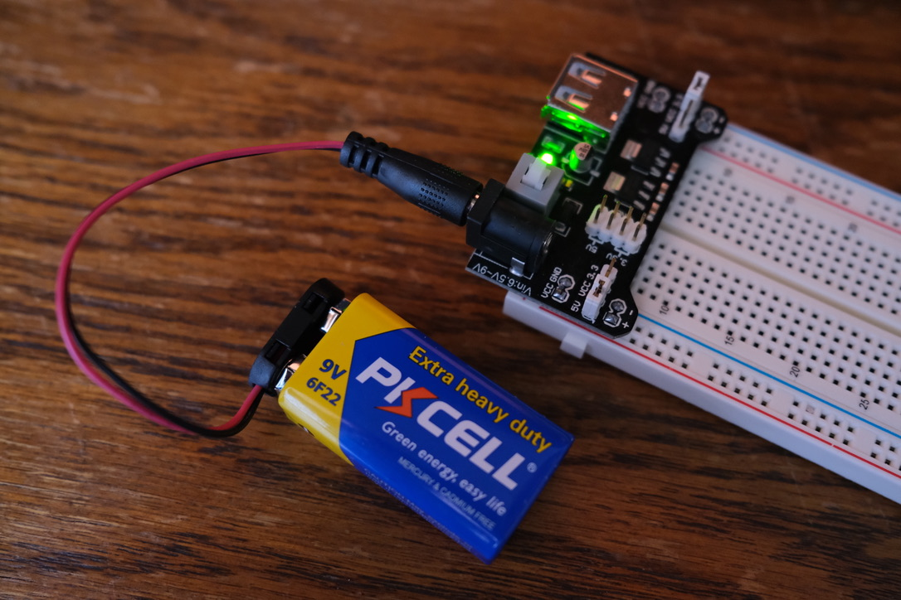
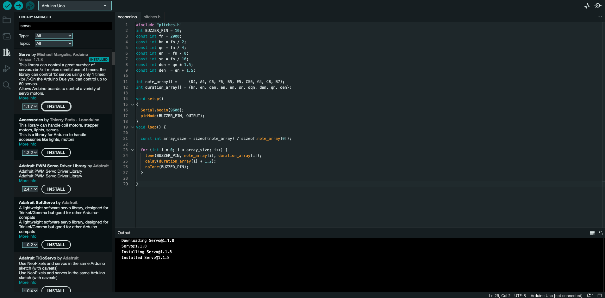

All materials but the multimeter are sourced from the Elegoo Super Starter Kit UNO R3 Project Kit
Elegoo Uno R3 Controller Board
USB Cable
USB-C to USB-A Adapter
830 Tie-Points Breadboard
Breadboard Jumper Wire
Resistors
Power Supply Module
Servo Motor SG90
DC Motor and Fan Blade
L293D IC
Button
Potentiometer
9V Battery with Snap-on Connector
Multimeter
Part 0: Setting up Power
The Ardunio board can't output enough current to power a motor, this means we need to set up an external power
source. The picture below shows my power module connected to a breadboard.

Part 1: Wiring the Servo
To control a servo motor, the 5V and ground should be wired to the power lines of the power supply module, and the
signal wire (orange/yellow) should be connected to an PWM Arduino pin. The PWM pins on the Ardunio are pins 3, 5, 6, 9, 10, 11
and are labeled with a ~ symbol. The photo below shows my circuit.
To communicate with the servo, we'll be using the built in Servo.h library. The below photo shows the Servo.h library
is installed within the Ardunio IDE.

The video below shows the servo turning using the sketch given to us in the documentation.
Part 2: Controlling the Servo
The lab's second part required us to use the potentiometer to control movement of the servo. The below photo shows
my circuit with the addition of the potentiometer.
To convert the analog reading of the potentiometer to an angle for the servo, I used the map() function. The sketch can be viewed
here, and the result is shown below.
Next, we were tasked with using the potentiometer to change the speed of the sweeping servo. This was accomplished by changing the delay between
servoA.write() statements. The modified sketch is shown running below.
Part 3: DC Motor and Motor Drivers
This part of the lab required us to use the DC motor, I wired it to my arduino as such.
To drive the DC motor, I included the L293D chip in the circuit. I then ran the provided sketch which can be
seen running below.
We were then tasked to code the motor to follow the below actions using the rampUp() and rampDown() functions.
Turn forward at full speed for 1 seconds
Stop for 1 second
Turn backwards at full speed for 1 seconds
Stop for 1 second. Go back to 1
My code can be seen here and is shown running below.
Part 4: Table-Top Fan
For the final part of the lab we were tasked with attaching the dc motor to the servo motor, and coding a script which turned the servo from 0 to 120 degrees while running the dc motor at 70 percent power.
Below is a photo showing how I attached the servo to the dc motor, and a video of the script running. To run the fan at 70% speed, a PWM value of 179 is needed.
Conclusion
Honestly this lab felt endless and I'm glad to be done with it.